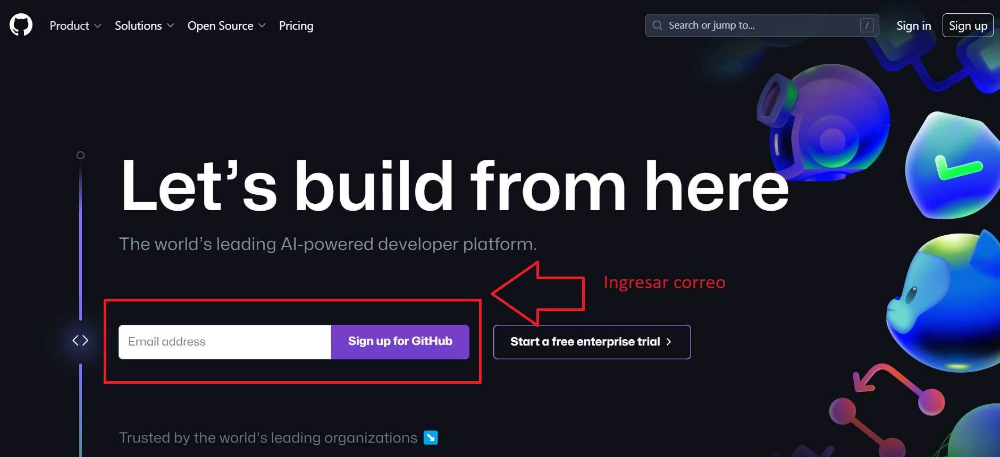
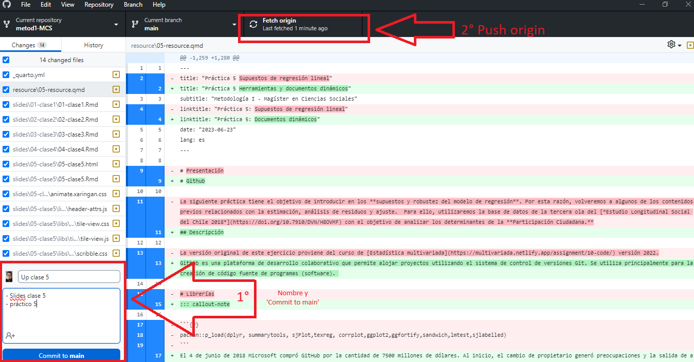

Github es una plataforma de desarrollo colaborativo que permite alojar proyectos utilizando el sistema de control de versiones Git. Se utiliza principalmente para la creación de código fuente de programas (software).
Note
El 4 de junio de 2018 Microsoft compró GitHub por la cantidad de 7500 millones de dólares. Al inicio, el cambio de propietario generó preocupaciones y la salida de algunos proyectos de este sitio; sin embargo, no fueron representativos. GitHub continúa siendo la plataforma más importante de colaboración para proyectos de código abierto.
2.2 Repositorios
Un repositorio contiene todo el código, tus archivos y el historial de revisiones y cambios de cada uno de ellos. Es el elemento más básico de Github.
Los repositorios pueden contar con múltiples colaboradores y pueden ser públicos o privados.
2.3 Principales términos
Término
Definición
Branch
Una versión paralela del código contenido en el repositorio, pero que no afecta a la rama principal.
Clonar
Para descargar una copia completa de los datos de un repositorio de GitHub.com, incluidas todas las versiones de cada archivo y carpeta.
Fork
Un nuevo repositorio que comparte la configuración de visibilidad y código con el repositorio «ascendente» original.
Merge
Para aplicar los cambios de una rama y en otra.
Pull request
Una solicitud para combinar los cambios de una branch en otra.
Remote
Un repositorio almacenado en GitHub, no en el equipo.
Upstream
La branch de un repositorio original que se ha forkeado o clonado. La branch correspondiente de la branch clonada o forkeada se denomina «descendente».
Registrarse ingresando correo electrónico y siguiendo los pasos descritos (crear contraseña y nombre de usuario)

La personalización de la cuenta se puede saltar haciendo click en skip abajo de la selección de opciones
Descargar e instalar Github Desktop
2.5 Crear repositorio
En la página principal de github hacer click en el ícono de usuario de la esquina superior derecha y luego ir a Tus repositorios
Una vez accedemos a Tus repositorios hacemos click en New/Nuevo
Luego le ponemos un nombre a nuestro repositorio, evitando siempre espacios, ñ y tíldes, y apretamos Crear repositorio
Note
Un buen nombre debería intentar resumir las principales características del proyecto de investigación en no más de 3 o 4 conceptos (por ejemplo, movilidad-social-AL para proyecto sobre movilidad social en América Latina)
En esta oportunidad, una recomendación sería generar un repositorio “ejercicios-practicos-RAD” para almacenar los distintos scripts de ejercicios prácticos que realizaremos en el curso R para el Análisis de Datos.
Luego pueden generar un segundo repositorio que sea “Trabajo RAD” para almacenar el desarrollo de sus trabajos de investigación.
2.6 Github desktop
Una vez creado un repositorio, lo que nos interesa es descargarlo. Al abrir la aplicación de Github desktop por primera vez (descargada anteriormente), nos debería aparecer la opción de clonar nuestro repositorio R-data-analisis en la pantalla de inicio. Lo clonamos y seleccionamos una carpeta de nuestro computador para almacenarlo.
Para todas las siguientes veces, las instrucciones son estas:
1- Apretamos Repositorio actual en la esquina superior izquierda
2- Apretamos añadir
3- Apretamos clonar repositorio…
4- Seleccionamos nuestro repositorio
5- seleccionamos la carpeta donde se almacenará. Siempre evitando tener tíldes, ñ y espacios en la dirección de almacenamiento y apretamos ‘clone’.
Note
La aplicación de escritorio de Github es un poco más intuitiva y fácil de usar. Sin embargo, RStudio también tiene una extensión para utilizar github de manera directa dentro de la plataforma.
Mientras tanto utilicen Github Desktop en sus computadores personales. Las siguientes clases en el laboratorio de computación de la UAH utilizaremos Rstudio para clonar sus repositorios y hacer las modificaciones correspondientes.
7- Creamos las carpetas pertenecientes al protocolo IPO (input-procesamiento-output) para organizar nuestro proyecto)
2.7 RStudio Projects
File -> New Project
2.8 Abriendo la sesión de RStudio como proyecto
identificar en la carpeta respectiva el archivo .Rproj
ejecutar y se abre R / RStudio con ese directorio como raíz
2.9 Rutas relativas en código
forma de “señalar el camino” para abrir y guardar archivos al interior de una carpeta de proyecto autocontenido (= sin referencias locales)
este camino tiene básicamente 3 direcciones:
bajar -> hacia subcarpetas
subir -> hacia carpetas superiores
subir y bajar -> hacia otras subcarpetas
2.9.1 bajando
para “bajar” hacia a una subcarpeta, simplemente damos la ruta de la carpeta/archivo
ej: si estoy en el archivo paper.Rmd (directorio raíz), y quiero incluir una imagen (directorio input/images/imagen.jpg), entonces la ruta es input/images/imagen.jpg
o para señalar la ruta al bib desde paper.Rmd (en raíz): input/bib/referencias.bib
2.9.2 subiendo
para subir se utilizan los caracteres ../ por cada nivel.
Ej: si quiero guardar una tabla en el directorio raíz generada desde un archivo de código en la subcarpeta proc, entonces la ruta es ../tabla.html
2.9.3 subiendo y bajando
combinación de las anteriores
Ej: para abrir la base de datos original en la subcarpeta input/data desde el código de procesamiento en la subcarpeta proc, entonces:
../input/data/original.dat
3 Quarto
La escritura en Quarto tiene algunos códigos o funciones, aquí un resumen de su mayoría:
Código
Así se ve
Algo de texto en el párrafo.
Más texto
espacio entre lineas.
Algo de texto.
Algo de texto en el párrafo. Siempre utilizando espacios para dividir párrafos
Abrimos nuestro Rproject y creamos un nuevo documento de Quarto file –> new file –> Quarto document
Note
YAML: Lenguaje de programación. Es un formato de serialización de datos que proporcionan un mecanismo de intercambio de datos legible por humanos. Dan formato a los datos de manera estandarizada para su intercambio entre aplicaciones de software.
Luego, podemos escribir en el documento, separando por títulos (#) cada sección. La jerarquía de los títulos se establece según la cantidad de ‘#’.
A continuación, en esta guía combinaremos el paso-a-paso de crear un documento dinámico con quarto, a la vez que vamos viendo distintas funciones de este proceso.
Por ejemplo, como hacer una nota al pie1. Para hacerlo, solo debemos escribir [ ^2] pero sin el espacio entre los corchetes. Luego, en otra línea escribimos [^2]: Esta es la nota al pie
5 Código de análisis de ejemplo
Para poder escribir código de análisis en un documento Quarto debemos generar trozo de código llamado ‘Chunk’, que se puede crear con ctrl+alt+i o directamente en el menú de arriba en ‘Code -> Insert Chunk’.
5.1 Cargar paquetes
Code
pacman::p_load(sjlabelled, dplyr, #Manipulacion de datos stargazer, #Tablas sjmisc, # Tablas summarytools, # Tablas kableExtra, #Tablas sjPlot, #Tablas y gráficos corrplot, # Correlaciones sessioninfo, # Información de la sesión de trabajo ggplot2) # Para la mayoría de los gráficos
5.2 Cargar bases de datos
Cargamos ambas bases de datos desde internet
Code
load(url("https://github.com/Kevin-carrasco/R-data-analisis/raw/main/files/data/latinobarometro_total.RData")) #Cargar base de datosload(url("https://github.com/Kevin-carrasco/R-data-analisis/raw/main/files/data/data_wvs.RData")) #Cargar base de datos
Para trabajar con ambas bases, agruparemos las variables de interés por país, por lo que ya no trabajaremos directamente con individuos.
Code
context_data <- wvs %>%group_by(B_COUNTRY) %>%# Agrupar por paíssummarise(gdp =mean(GDPpercap1, na.rm =TRUE), # Promedio de GDP per capitalife_exp =mean(lifeexpect, na.rm =TRUE), # Promedio esperanza de vidagini =mean(giniWB, na.rm =TRUE)) %>%# Promedio ginirename(idenpa=B_COUNTRY) # Para poder vincular ambas bases, es necesario que la variable de identificación se llamen igualcontext_data$idenpa <-as.numeric(context_data$idenpa) # Como era categórica, la dejamos numéricaproc_data <- proc_data %>%group_by(idenpa) %>%# agrupamos por paíssummarise(promedio =mean(conf_inst, na.rm =TRUE)) # promedio de confianza en instituciones por país
5.3 Unir bases de datos
Para vincular nuestras bases de datos existen múltiples opciones, la primera es ‘merge’ de R base y las siguientes tres vienen desde dplyr: ‘right_join’, ‘full_join’ y ‘left_join’. Cada una tiene sus propias potencialidades y limitaciones y dependerá de cada caso cuál usemos
5.3.1 Probemos merge
Code
data <-merge(proc_data, context_data, by="idenpa")
5.3.2 Guardamos esta nueva base en nuestra carpeta input
Code
save(data, file="input/data/proc/data.RData")
5.4 Visualizaciones
Podemos establecer referencias cruzadas para las tablas y gráficos dentro del texto, para poder automatizarlo, como ejemplo así, pero dentro del chunk:
#| label: tbl-sjmisc
#| tbl-cap: “Descriptivos con sjmisc”
5.4.1 Descriptivos
El Chunk se debería ver así:
#| label: tbl-sjmisc
#| tbl-cap: “Descriptivos con sjmisc”
sjmisc::descr(data,
show = c("label","range", "mean", "sd", "NA.prc", "n"))%>% # Selecciona estadísticos
kable(.,"markdown") # Esto es para que se vea bien en quarto
Code
sjmisc::descr(data,show =c("label","range", "mean", "sd", "NA.prc", "n"))%>%# Selecciona estadísticoskable(.,"markdown") # Esto es para que se vea bien en quarto
Table 1: Descriptivos con sjmisc
var
label
n
NA.prc
mean
sd
range
4
promedio
promedio
11
0
3.40077
1.016976
3.59 (2.3-5.9)
1
gdp
gdp
11
0
15528.18364
6480.045512
19523.79 (5631.2-25154.99)
3
life_exp
life_exp
11
0
75.90909
2.286593
8.8 (71.24-80.04)
2
gini
gini
11
0
45.46364
4.156266
14.2 (39.7-53.9)
Luego de establecer el link y el nombre de la tabla, podemos referenciar acá con un @, así: @ tbl-sjmisc (pero junto), y que se vería así Table 1
5.4.2 Gráficos
Y para los gráficos se hace de la misma forma:
#| label: fig-gdp
#| fig-cap: “Plots”
Code
graph1<-ggplot(data, aes(x = idenpa, y = gdp)) +geom_point() +labs(x ="País", y ="Gdp") +theme_minimal()+theme(axis.text.x =element_text(angle =45, hjust =1))graph1
Figure 1: Producto interno bruto por país
Sin embargo la Figure 1 entrega información desordenada. Mejor ordenar por tamaño de PIB que por orden alfabético de los países. Para eso
Code
data_sorted <- data %>%arrange(desc(gdp))graph2<-ggplot(data_sorted, aes(x =factor(idenpa, levels = idenpa), y = gdp)) +geom_point() +labs(x ="País", y ="GDP") +theme_minimal() +theme(axis.text.x =element_text(angle =45, hjust =1))graph2
Figure 2: Producto interno bruto por país ordenado
Ahora sí la Figure 2 muestra un gráfico más ordenado.
5.4.3 Guardamos este nuevo gráfico en la carpeta output
Code
ggsave(graph2, file="output/graphs/graph2.png")
Y comparar el promedio de confianza en instituciones según producto interno bruto por país?
Code
data %>%ggplot(aes(x = gdp, y = promedio, label = idenpa)) +geom_point() +geom_text(vjust =-0.5) +labs(x ="GDP", y ="Promedio") +theme_bw()
Figure 3: Confianza en instituciones según el producto interno bruto por país
La Figure 3 muestra la relación que existe entre el producto interno bruto y la confianza en instituciones para los 18 países analizados. Es interesante comparar los casos de Chile y urugay, que al tener similar GDP, tienen un nivel de confianza en instituciones muy diferente.
Luego renderizamos
y se debería ver así:
Ahora que tenemos nuestra investigación podemos subirla a Github Pages a través de Github Desktop.
5.5 Github desktop

5.6 Github pages
Ahora podemos ver los documentos modificados en nuestro repositorio online de github.
Vamos a settings
Dentro de Settings vamos a Pages, luego ‘none’ y seleccionamos ‘main’. Luego apretamos Save
Luego de aproximadamente un minuto se actualiza la página y aparecerá un link en la parte superior, algo así como kevin-carrasco.github.io/ipo que es nuestra página principal de nuestro sitio web de github.
El link para llegar a nuestro documento renderizado de quarto sigue la estructura del repositorio:
---title: "Introducción al flujo de investigación reproducible"format: html: toc: true number-sections: true output-file: "taller-github-quarto.html"editor: source---# Introducción al flujo de investigación reproducible## Prerequisitos- Crear cuenta en [www.github.com](www.github.com)- Descargar Github Desktop# Github## DescripciónGithub es una plataforma de desarrollo colaborativo que permite alojar proyectos utilizando el sistema de control de versiones Git. Se utiliza principalmente para la creación de código fuente de programas (software). ::: callout-noteEl 4 de junio de 2018 Microsoft compró GitHub por la cantidad de 7500 millones de dólares. Al inicio, el cambio de propietario generó preocupaciones y la salida de algunos proyectos de este sitio; sin embargo, no fueron representativos. GitHub continúa siendo la plataforma más importante de colaboración para proyectos de código abierto.:::## RepositoriosUn repositorio contiene todo el código, tus archivos y el historial de revisiones y cambios de cada uno de ellos. Es el elemento más básico de Github.Los repositorios pueden contar con múltiples colaboradores y pueden ser públicos o privados.## Principales términos| Término | Definición ||---------------|------------------------------------------------------------------------------------------------------|| Branch | Una versión paralela del código contenido en el repositorio, pero que no afecta a la rama principal.|| Clonar | Para descargar una copia completa de los datos de un repositorio de GitHub.com, incluidas todas las versiones de cada archivo y carpeta. || Fork | Un nuevo repositorio que comparte la configuración de visibilidad y código con el repositorio «ascendente» original.|| Merge | Para aplicar los cambios de una rama y en otra. || Pull request | Una solicitud para combinar los cambios de una branch en otra. || Remote | Un repositorio almacenado en GitHub, no en el equipo. || Upstream | La branch de un repositorio original que se ha *forkeado* o clonado. La branch correspondiente de la branch clonada o *forkeada* se denomina «descendente». |## Crear cuenta e instalación1. Acceder a la página de [github](https://github.com/)Registrarse ingresando correo electrónico y siguiendo los pasos descritos (crear contraseña y nombre de usuario)La personalización de la cuenta se puede saltar haciendo click en **skip** abajo de la selección de opciones2. Descargar e instalar Github Desktop## Crear repositorioEn la página principal de [github](https://github.com/) hacer click en el ícono de usuario de la esquina superior derecha y luego ir a Tus repositoriosUna vez accedemos a Tus repositorios hacemos click en New/NuevoLuego le ponemos un nombre a nuestro repositorio, evitando siempre espacios, ñ y tíldes, y apretamos Crear repositorio::: callout-noteUn buen nombre debería intentar resumir las principales características del proyecto de investigación en no más de 3 o 4 conceptos (por ejemplo, movilidad-social-AL para proyecto sobre movilidad social en América Latina)En esta oportunidad, una recomendación sería generar un repositorio "ejercicios-practicos-RAD" para almacenar los distintos scripts de ejercicios prácticos que realizaremos en el curso R para el Análisis de Datos. Luego pueden generar un segundo repositorio que sea "Trabajo RAD" para almacenar el desarrollo de sus trabajos de investigación.:::## Github desktopUna vez creado un repositorio, lo que nos interesa es descargarlo. Al abrir la aplicación de Github desktop por primera vez (descargada anteriormente), nos debería aparecer la opción de clonar nuestro repositorio R-data-analisis en la pantalla de inicio. Lo clonamos y seleccionamos una carpeta de nuestro computador para almacenarlo.Para todas las siguientes veces, las instrucciones son estas:1- Apretamos Repositorio actual en la esquina superior izquierda2- Apretamos añadir3- Apretamos clonar repositorio...4- Seleccionamos nuestro repositorio5- seleccionamos la carpeta donde se almacenará. Siempre evitando tener tíldes, ñ y espacios en la dirección de almacenamiento y apretamos 'clone'.::: callout-noteLa aplicación de escritorio de Github es un poco más intuitiva y fácil de usar. Sin embargo, RStudio también tiene una extensión para utilizar github de manera directa dentro de la plataforma. Mientras tanto utilicen Github Desktop en sus computadores personales. Las siguientes clases en el laboratorio de computación de la UAH utilizaremos Rstudio para clonar sus repositorios y hacer las modificaciones correspondientes.:::7- Creamos las carpetas pertenecientes al protocolo IPO (input-procesamiento-output) para organizar nuestro proyecto)## RStudio Projects- File -> New Project## Abriendo la sesión de RStudio como proyecto- identificar en la carpeta respectiva el archivo .Rproj- ejecutar y se abre R / RStudio con ese directorio como raíz## Rutas relativas en código- forma de "señalar el camino" para abrir y guardar archivos al interior de una carpeta de proyecto autocontenido (= sin referencias locales)- este camino tiene básicamente 3 direcciones: - bajar -> hacia subcarpetas - subir -> hacia carpetas superiores - subir y bajar -> hacia otras subcarpetas ### bajando- para **"bajar"** hacia a una subcarpeta, simplemente damos la ruta de la carpeta/archivo - ej: si estoy en el archivo paper.Rmd (directorio raíz), y quiero incluir una imagen (directorio input/images/imagen.jpg), entonces la ruta es `input/images/imagen.jpg` - o para señalar la ruta al bib desde paper.Rmd (en raíz): `input/bib/referencias.bib`### subiendo- para **subir** se utilizan los caracteres `../` por cada nivel.- Ej: si quiero guardar una tabla en el directorio raíz generada desde un archivo de código en la subcarpeta proc, entonces la ruta es `../tabla.html`### subiendo y bajando - combinación de las anteriores- Ej: para abrir la base de datos original en la subcarpeta input/data desde el código de procesamiento en la subcarpeta proc, entonces:`../input/data/original.dat`# QuartoLa escritura en Quarto tiene algunos códigos o funciones, aquí un resumen de su mayoría:+-------------------------------------------------------------------------------+-------------------------------------------------------------------------------+|Código | Así se ve |+===============================================================================+===============================================================================+| Algo de texto en el párrafo. | Algo de texto. || | || Más texto | Algo de texto en el párrafo. Siempre utilizando espacios para dividir párrafos|| espacio entre lineas. | |+-------------------------------------------------------------------------------+-------------------------------------------------------------------------------+| `` *Cursivas* `` | *Cursivas* |+-------------------------------------------------------------------------------+-------------------------------------------------------------------------------+| `` **Negrita** `` | **Negrita** |+-------------------------------------------------------------------------------+-------------------------------------------------------------------------------+| `# Título 1` | # Título 1 |+-------------------------------------------------------------------------------+-------------------------------------------------------------------------------+| `## Título 2` | ## Título 2 |+-------------------------------------------------------------------------------+-------------------------------------------------------------------------------+| `### Título 3` | ### Título 3 |+-------------------------------------------------------------------------------+-------------------------------------------------------------------------------+| (puedes llegar hasta un título N° 6 con `######`) | |+-------------------------------------------------------------------------------+-------------------------------------------------------------------------------+| `` [Texto enlace](https://quarto.org/) `` | [Texto enlace](https://quarto.org/) |+-------------------------------------------------------------------------------+-------------------------------------------------------------------------------+| ``  `` | {alt="Class logo"} |+-------------------------------------------------------------------------------+-------------------------------------------------------------------------------+| `> Citas` | > Citas |+-------------------------------------------------------------------------------+-------------------------------------------------------------------------------+| 1. Una | 1. Una || 2. lista | || 3 ordenada | 2. lista || | || | 3. ordenada |+-------------------------------------------------------------------------------+-------------------------------------------------------------------------------+| - Otro | - Otro || - tipo | || - de lista | - tipo || | || | - de lista |+-------------------------------------------------------------------------------+-------------------------------------------------------------------------------+1. Abrimos nuestro Rproject y creamos un nuevo documento de Quarto file --> new file --> Quarto document::: callout-noteYAML: Lenguaje de programación. Es un formato de serialización de datos que proporcionan un mecanismo de intercambio de datos legible por humanos. Dan formato a los datos de manera estandarizada para su intercambio entre aplicaciones de software.:::```---title: "Mi Documento"format: html: toc: true number-sections: true---```Luego, podemos escribir en el documento, separando por títulos (#) cada sección. La jerarquía de los títulos se establece según la cantidad de '#'. A continuación, en esta guía combinaremos el paso-a-paso de crear un documento dinámico con quarto, a la vez que vamos viendo distintas funciones de este proceso.Por ejemplo, como hacer una nota al pie[^1]. Para hacerlo, solo debemos escribir [ ^2] pero sin el espacio entre los corchetes. Luego, en otra línea escribimos [^2]: Esta es la nota al pie[^1]: Esta es la nota al pie# Código de análisis de ejemploPara poder escribir código de análisis en un documento Quarto debemos generar trozo de código llamado 'Chunk', que se puede crear con ctrl+alt+i o directamente en el menú de arriba en 'Code -> Insert Chunk'.## Cargar paquetes```{r}pacman::p_load(sjlabelled, dplyr, #Manipulacion de datos stargazer, #Tablas sjmisc, # Tablas summarytools, # Tablas kableExtra, #Tablas sjPlot, #Tablas y gráficos corrplot, # Correlaciones sessioninfo, # Información de la sesión de trabajo ggplot2) # Para la mayoría de los gráficos```## Cargar bases de datosCargamos ambas bases de datos desde internet```{r}load(url("https://github.com/Kevin-carrasco/R-data-analisis/raw/main/files/data/latinobarometro_total.RData")) #Cargar base de datosload(url("https://github.com/Kevin-carrasco/R-data-analisis/raw/main/files/data/data_wvs.RData")) #Cargar base de datos```Para trabajar con ambas bases, agruparemos las variables de interés por país, por lo que ya no trabajaremos directamente con individuos.```{r}context_data <- wvs %>%group_by(B_COUNTRY) %>%# Agrupar por paíssummarise(gdp =mean(GDPpercap1, na.rm =TRUE), # Promedio de GDP per capitalife_exp =mean(lifeexpect, na.rm =TRUE), # Promedio esperanza de vidagini =mean(giniWB, na.rm =TRUE)) %>%# Promedio ginirename(idenpa=B_COUNTRY) # Para poder vincular ambas bases, es necesario que la variable de identificación se llamen igualcontext_data$idenpa <-as.numeric(context_data$idenpa) # Como era categórica, la dejamos numéricaproc_data <- proc_data %>%group_by(idenpa) %>%# agrupamos por paíssummarise(promedio =mean(conf_inst, na.rm =TRUE)) # promedio de confianza en instituciones por país```## Unir bases de datosPara vincular nuestras bases de datos existen múltiples opciones, la primera es 'merge' de R base y las siguientes tres vienen desde dplyr: 'right_join', 'full_join' y 'left_join'. Cada una tiene sus propias potencialidades y limitaciones y dependerá de cada caso cuál usemos### Probemos merge```{r}data <-merge(proc_data, context_data, by="idenpa")``````{r}data <- data %>%mutate(idenpa =as.character(idenpa)) %>%mutate(idenpa =case_when( idenpa =="32"~"Argentina", idenpa =="68"~"Bolivia", idenpa =="76"~"Brasil", idenpa =="152"~"Chile", idenpa =="170"~"Colombia", idenpa =="188"~"Costa Rica", idenpa =="214"~"Cuba", idenpa =="218"~"República Dominicana", idenpa =="222"~"Ecuador", idenpa =="320"~"El Salvador", idenpa =="340"~"Guatemala", idenpa =="484"~"Honduras", idenpa =="558"~"México", idenpa =="591"~"Nicaragua", idenpa =="600"~"Panamá", idenpa =="604"~"Paraguay", idenpa =="858"~"Uruguay", idenpa =="862"~"Venezuela"))data$gdp <-as.numeric(data$gdp)data$gdp[data$gdp==0] <-NAdata <-na.omit(data)```### Guardamos esta nueva base en nuestra carpeta input```{r eval=FALSE}save(data, file="input/data/proc/data.RData")```## VisualizacionesPodemos establecer referencias cruzadas para las tablas y gráficos dentro del texto, para poder automatizarlo, como ejemplo así, pero dentro del chunk:#| label: tbl-sjmisc#| tbl-cap: "Descriptivos con sjmisc"### DescriptivosEl Chunk se debería ver así:#| label: tbl-sjmisc#| tbl-cap: "Descriptivos con sjmisc"sjmisc::descr(data, show = c("label","range", "mean", "sd", "NA.prc", "n"))%>% # Selecciona estadísticos kable(.,"markdown") # Esto es para que se vea bien en quarto```{r}#| label: tbl-sjmisc#| tbl-cap: "Descriptivos con sjmisc"sjmisc::descr(data,show =c("label","range", "mean", "sd", "NA.prc", "n"))%>%# Selecciona estadísticoskable(.,"markdown") # Esto es para que se vea bien en quarto```Luego de establecer el link y el nombre de la tabla, podemos referenciar acá con un @, así: @ tbl-sjmisc (pero junto), y que se vería así @tbl-sjmisc### GráficosY para los gráficos se hace de la misma forma:#| label: fig-gdp#| fig-cap: "Plots" ```{r}#| label: fig-gdp#| fig-cap: "Producto interno bruto por país" graph1<-ggplot(data, aes(x = idenpa, y = gdp)) +geom_point() +labs(x ="País", y ="Gdp") +theme_minimal()+theme(axis.text.x =element_text(angle =45, hjust =1))graph1```Sin embargo la @fig-gdp entrega información desordenada. Mejor ordenar por tamaño de PIB que por orden alfabético de los países. Para eso```{r}#| label: fig-gdp-order#| fig-cap: "Producto interno bruto por país ordenado" data_sorted <- data %>%arrange(desc(gdp))graph2<-ggplot(data_sorted, aes(x =factor(idenpa, levels = idenpa), y = gdp)) +geom_point() +labs(x ="País", y ="GDP") +theme_minimal() +theme(axis.text.x =element_text(angle =45, hjust =1))graph2```Ahora sí la @fig-gdp-order muestra un gráfico más ordenado.### Guardamos este nuevo gráfico en la carpeta output```{r eval=FALSE}ggsave(graph2, file="output/graphs/graph2.png")```Y comparar el promedio de confianza en instituciones según producto interno bruto por país?```{r}#| label: fig-ctr#| fig-cap: "Confianza en instituciones según el producto interno bruto por país" data %>%ggplot(aes(x = gdp, y = promedio, label = idenpa)) +geom_point() +geom_text(vjust =-0.5) +labs(x ="GDP", y ="Promedio") +theme_bw()```La @fig-ctr muestra la relación que existe entre el producto interno bruto y la confianza en instituciones para los 18 países analizados. Es interesante comparar los casos de Chile y urugay, que al tener similar GDP, tienen un nivel de confianza en instituciones muy diferente.5. Luego renderizamos y se debería ver así:```{=html}<iframe src="https://kevin-carrasco.github.io/ipo/trabajo.html" width="1000" height="800"></iframe>```6. Ahora que tenemos nuestra investigación podemos subirla a Github Pages a través de Github Desktop.## Github desktop## Github pagesAhora podemos ver los documentos modificados en nuestro repositorio online de github.7. Vamos a settings8. Dentro de Settings vamos a Pages, luego 'none' y seleccionamos 'main'. Luego apretamos SaveLuego de aproximadamente un minuto se actualiza la página y aparecerá un link en la parte superior, algo así como [kevin-carrasco.github.io/ipo](kevin-carrasco.github.io/ipo) que es nuestra página principal de nuestro sitio web de github.El link para llegar a nuestro documento renderizado de quarto sigue la estructura del repositorio:kevin-carrasco.github.io/ipo/trabajo.html